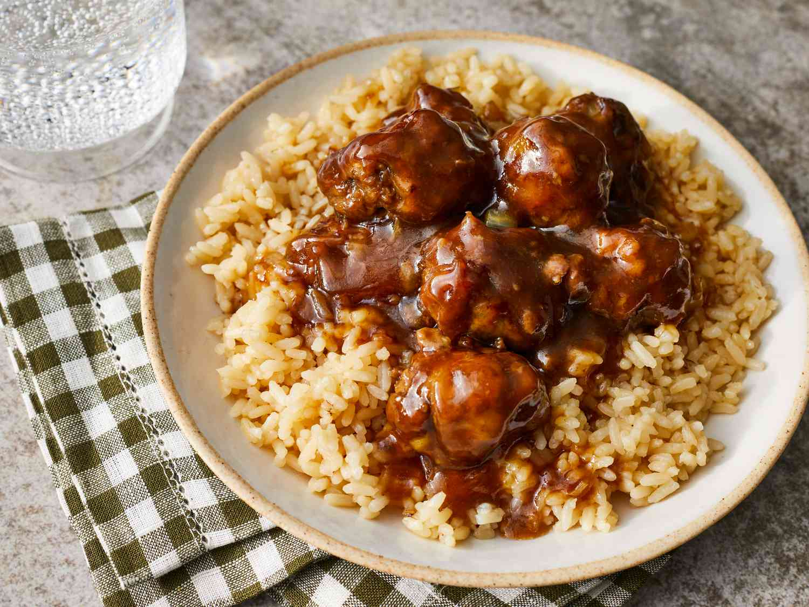

How to make Sweet and Sour Meatballs

Prep Time: 15 mins
Cook Time: 45 mins
Total Time: 1 hr
Servings: 4
Ingredients
- 1 pound ground beef
- 1 onion, diced
- 1 egg
- ¼ cup dry bread crumb
- 1 ½ cups water
- 1 cup packed brown sugar
- ¼ cup distilled white vinegar
- 3 tablespoons soy sauce
- 3 tablespoons all-purpose flour
Directions
-
Mix beef, onion, egg, and breadcrumbs together in a medium bowl until well combined.
-
Shape mixture into balls, about 1 1/2-inches in size.
-
Cook meatballs in a large nonstick skillet over medium heat until evenly browned, about 10 minutes; set aside.
-
Stir water, sugar, vinegar, soy sauce, and flour together in a large saucepan until well combined.
-
Add meatballs and bring to a boil; reduce heat to low and simmer, stirring often, for 30 minutes.
-
Serve over rice.